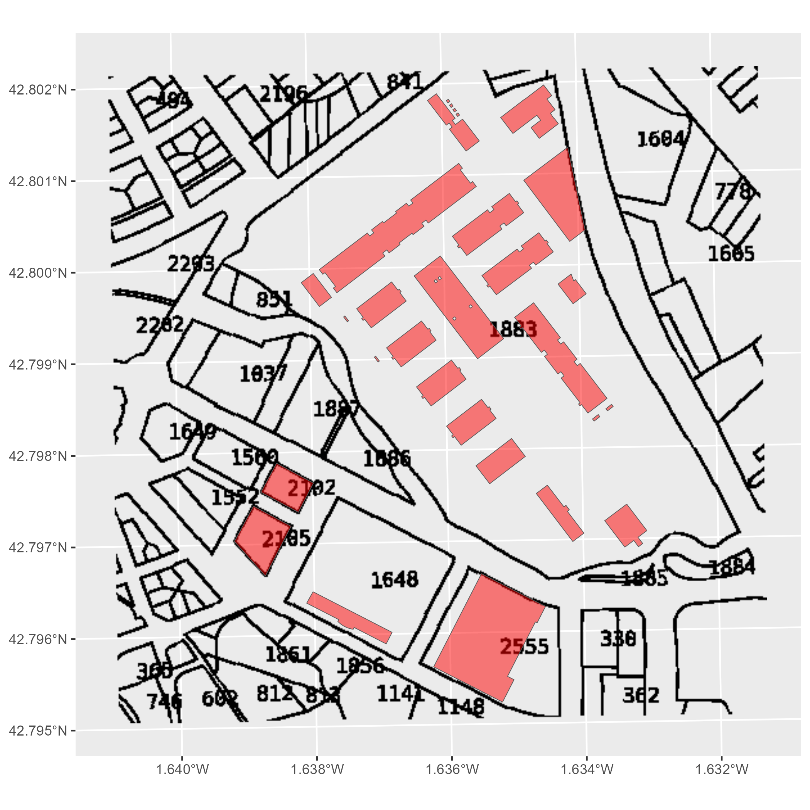
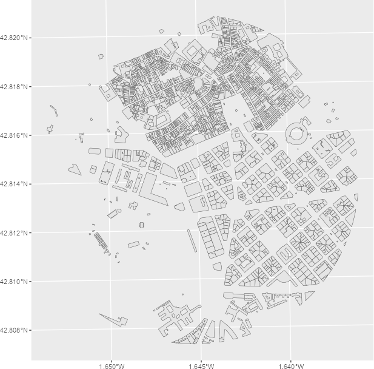
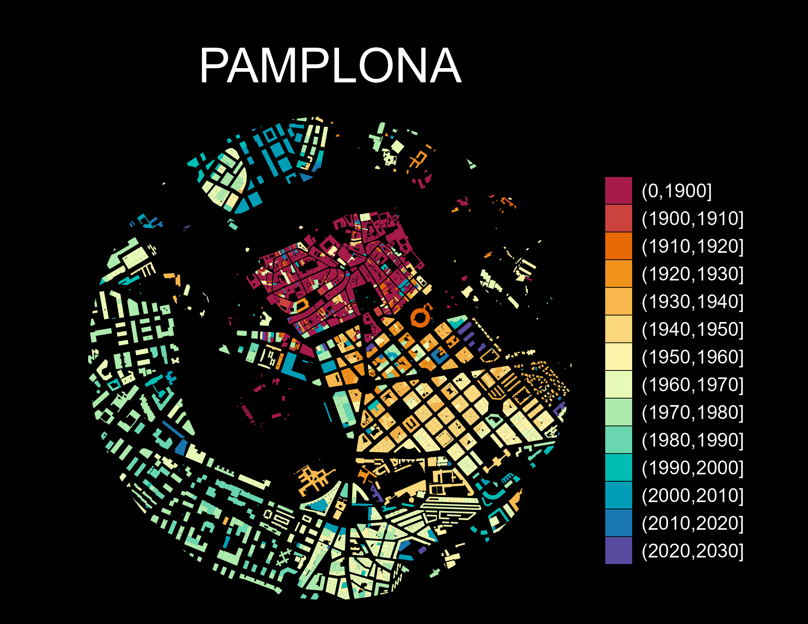

CatastRoNav provides access to services from the Cadastre of Navarre. With CatastRoNav, you can retrieve addresses, buildings and cadastral parcels through its INSPIRE ATOM and WFS services, and download georeferenced images through its WMS service.
INSPIRE services
The INSPIRE Directive aims to create a European Union Spatial Data Infrastructure (SDI) for EU environmental policies and policies or activities that may affect the environment. This infrastructure enables public sector organizations to share environmental spatial information, facilitates public access to spatial information across Europe and assists in policy-making across boundaries.
Source: INSPIRE Knowledge Base.
The Cadastre of Navarre implements the INSPIRE directive through three services:
- ATOM service: Downloads complete municipal cadastral datasets.
- WFS service: Retrieves cadastral features within a supplied bounding box.
- WMS service: Downloads georeferenced map images for different cadastral elements.
ATOM download and WFS query functions return addresses, buildings and cadastral parcels as sf objects from the sf package. ATOM index and search functions return tibbles. WMS returns georeferenced images as SpatRaster objects from the terra package.
Examples
Working with layers
This example demonstrates the main capabilities of CatastRoNav by recreating a cadastral map of the surroundings of El Sadar Stadium. We use the WMS and WFS services to retrieve different layers.
# Retrieve buildings within a bounding box.
# Coordinates can be obtained from https://boundingbox.klokantech.com/.
library(CatastRoNav)
library(dplyr)
library(ggplot2)
library(mapSpain)
library(sf)
stadium <- catrnav_wfs_get_buildings_bbox(
c(-1.6384926614, 42.7958160568, -1.6354170622, 42.7974640323),
srs = 4326
)
# Transform to the WMS query CRS.
stadium_parcel_pr <- sf::st_transform(stadium, 3857)
# Extract parcel label imagery.
labs <- catrnav_wms_get_layer(
stadium_parcel_pr,
what = "parcel",
srs = 3857
)
# Plot the layers.
library(tidyterra) # Plot SpatRaster layers.
ggplot() +
geom_spatraster_rgb(data = labs) +
geom_sf(data = stadium, fill = "red", alpha = .5) +
coord_sf(crs = 25830)
Figure 1: Cadastral layers around El Sadar Stadium
Thematic maps
We can also create thematic maps from attributes in spatial objects. This example visualizes urban growth in Pamplona with CatastRoNav, reproducing a map by Dominic Royé (Royé 2019).
First, we retrieve the geometry of Pamplona’s city center with mapSpain:
# Use mapSpain to obtain the city geometry.
pamp <- esp_get_capimun(munic = "^Pamplona")
# Transform to ETRS89 / UTM zone 30N and add a 1,250 m buffer.
pamp_buff <- pamp |>
st_transform(25830) |>
st_buffer(1250)Next, we retrieve buildings using the WFS service:
pamp_bu <- catrnav_wfs_get_buildings_bbox(pamp_buff, count = 10000)Then, we crop the buildings to the buffer created earlier:
# Crop buildings.
dataviz <- st_intersection(pamp_bu, pamp_buff)
ggplot(dataviz) +
geom_sf()
Figure 2: Buildings within the Pamplona buffer
Next, we extract the construction year from the beginning column:
# Extract the first four positions.
year <- substr(dataviz$beginning, 1, 4)
# Replace entries that do not look like years with "0000".
year[!(year %in% 0:2500)] <- "0000"
# Convert to integer.
year <- as.integer(year)
# Add a new column.
dataviz <- dataviz |>
mutate(year = year)Finally, we group the data by construction year and create the visualization. Here, cut() creates classes for each decade from 1900 onward:
dataviz <- dataviz |>
mutate(
year_cat = cut(year, breaks = c(0, seq(1900, 2030, by = 10)), dig.lab = 4)
)
# Adjust the color palette.
dataviz_pal <- hcl.colors(length(levels(dataviz$year_cat)), "Spectral")
ggplot(dataviz) +
geom_sf(aes(fill = year_cat), color = NA) +
scale_fill_manual(values = dataviz_pal) +
theme_void() +
labs(title = "PAMPLONA", fill = "") +
theme(
panel.background = element_rect(fill = "black"),
plot.background = element_rect(fill = "black"),
legend.justification = .5,
legend.text = element_text(
colour = "white",
size = 12
),
plot.title = element_text(
colour = "white", hjust = .5,
margin = margin(t = 30),
size = 30
),
plot.caption = element_text(
colour = "white",
margin = margin(b = 20), hjust = .5
),
plot.margin = margin(r = 40, l = 40)
)
Figure 3: Urban growth in Pamplona